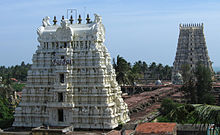

Ramanathaswamy temple is located in Rameshwaram, the Southern part of India in the state of Tamil Nadu. The legend about the temple says, this temple was constructed by Lord Rama to reach Lanka and is known as Ram Setu. The temple is devoted to Lord Shiva. Pilgrimage to Banaras is incomplete without a visit to Rameshwaram. The Linga at Rameshwaram is also one the twelve Jyotirlingas, sacred to Hindus. Brahma, Vishnu and Mahesh are worshipped altogether in Rameshwaram. It is believed that Lord Rama is a form of Lord Vishnu, Laxman is the form of Lord Brahma and Lord Hanuman is a form of Lord Maheshwara. Geographically Rameshwaram is located at the tip of Indian Peninsula in the Gulf of Mannar. Rameshwaram is located on Pamban Island which is separated from Indian subcontinent by Pamban Channel. Rameshwaram is considered a Holy pilgrimage site along with Varanasi. Rameshwaram holds great significance from the view of Hindu religion. Ramanathaswamy Temple, located in Rameshwaram is one of the four most prominent Pilgrimage site considered in the real Chardham Yatra. Ramanathaswamy Temple is also amongst the Twelve Jyotirlingas site in India. The Jyotirlingas are devoted to Lord Shiva. The present Ramanathaswamy Temple was constructed by Pandya Dynasty during 12th Century. The Ramanathaswamy Temple features a corridor of 1000 Pillars. Rameshwaram also supports Advaita School, which was started by Adi Shankaracharya. Ramanathaswamy Temple in Rameshwaram along with Badrinath Temple in the North, Dwarkadhish Temple in Dwarka and Jagannath Temple in Puri in the East are the real Chardham destinations and are said to be covered by every individual from Hindu origin to attain Moksha. The temples are ideologically divided according to the sects Saivism and Vaishnavism but the Chardham Pilgrimage holds significance for every Hindu.
